02-seed-stability · 单次成绩与种子波动
附录

测试777条；种子42/43/44逐次展示；提示单次确定性结果不作为训练随机重复。
数据：methods.json ｜ PDF
20本人确认＋382 AI辅助；待复核124条；无新增模型实验。学生最终解释待确认。
正文候选（待学生选用）
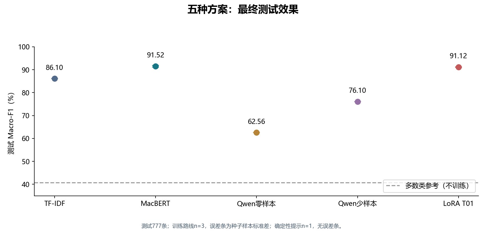
测试777条；训练路线n=3，误差条为种子样本标准差；确定性提示n=1，无误差条。
数据：methods.json ｜ PDF
附录
测试777条；种子42/43/44逐次展示；提示单次确定性结果不作为训练随机重复。
数据：methods.json ｜ PDF
正文候选（待学生选用）
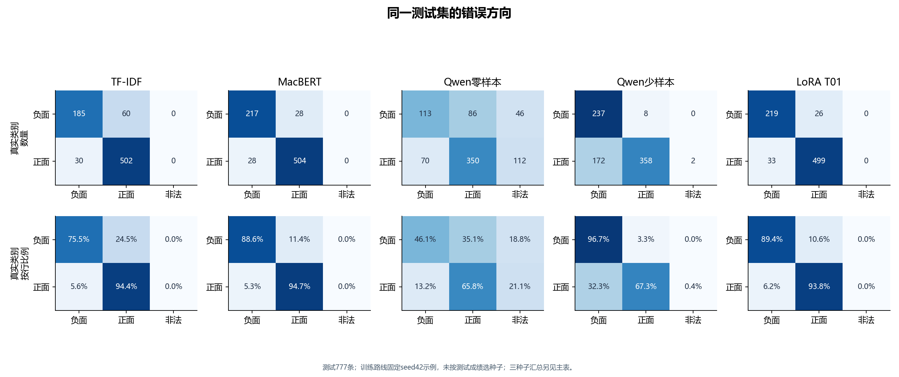
测试777条；训练路线固定seed42示例，未按测试成绩选种子；三种子汇总另见主表。
数据：methods.json / original predictions ｜ PDF
正文候选（待学生选用）

验证776条、seed42；长度256、batch16、3轮、全参；每配置按验证F1选最佳轮次。
数据：parameters.json / training-cost-ledger.json ｜ PDF
正文候选（待学生选用）
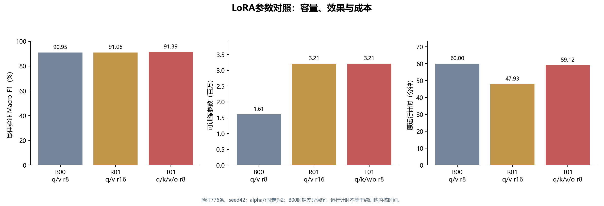
验证776条、seed42；alpha/r固定为2；B00时钟差异保留，运行计时不等于纯训练内核时间。
数据：parameters.json ｜ PDF
正文候选（待学生选用）
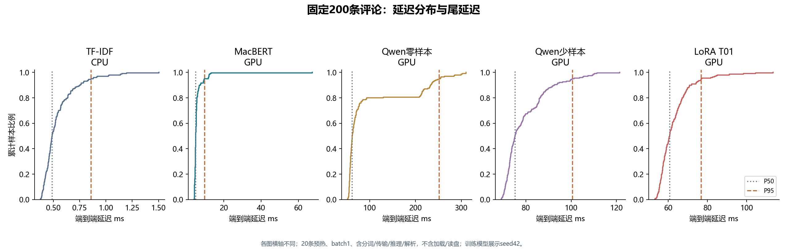
各图横轴不同；20条预热、batch1、含分词/传输/推理/解析，不含加载/读盘；训练模型展示seed42。
数据：latency.json / benchmark detail files ｜ PDF
正文候选（待学生选用）
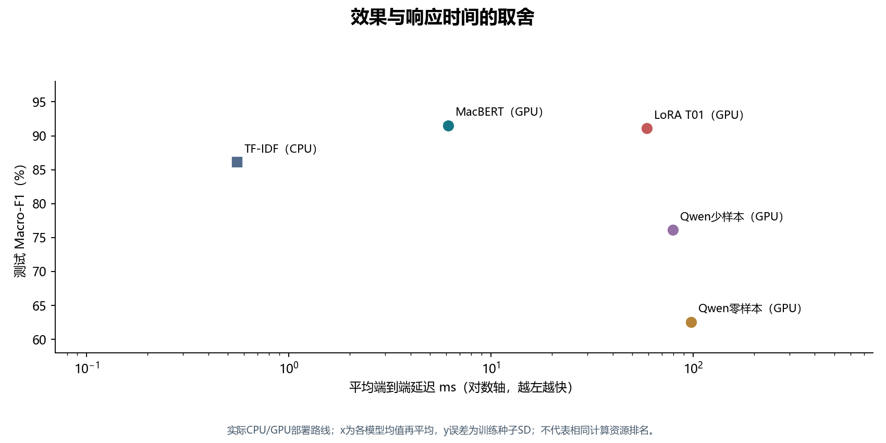
实际CPU/GPU部署路线；x为各模型均值再平均，y误差为训练种子SD；不代表相同计算资源排名。
数据：methods.json / latency.json ｜ PDF
附录
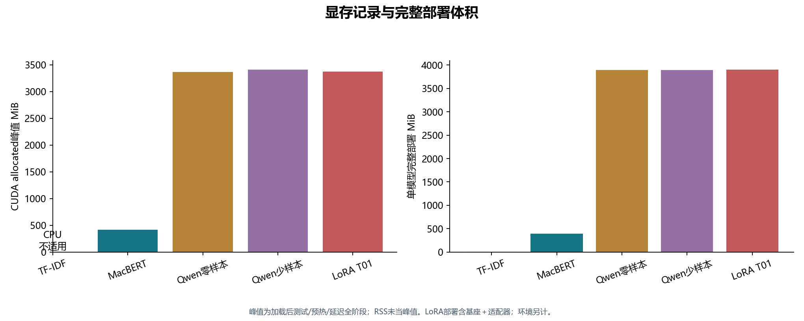
峰值为加载后测试/预热/延迟全阶段；RSS未当峰值。LoRA部署含基座＋适配器；环境另计。
数据：latency.json / deployment-storage.json ｜ PDF
附录
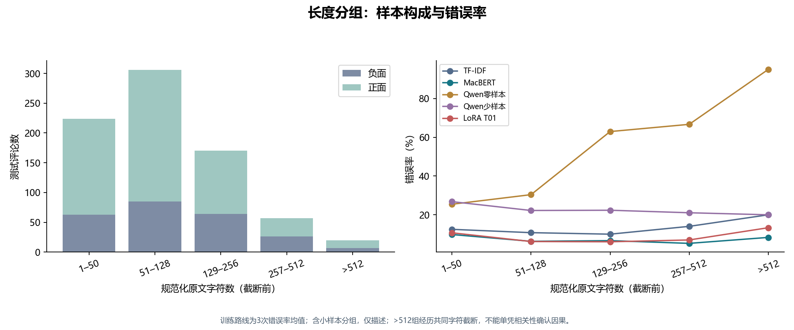
训练路线为3次错误率均值；含小样本分组，仅描述；>512组经历共同字符截断，不能单凭相关性确认因果。
数据：length-and-truncation.json ｜ PDF
正文候选（待学生选用）

5000次按真实类别分层的配对bootstrap、95%逐项百分位区间；种子先分别算F1再平均；事后探索性分析。
数据：paired-comparisons.json ｜ PDF
附录
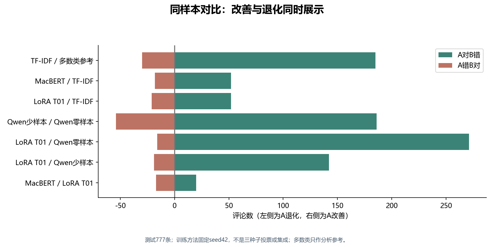
测试777条；训练方法固定seed42，不是三种子投票或集成；多数类只作分析参考。
数据：paired-comparisons.json ｜ PDF
附录
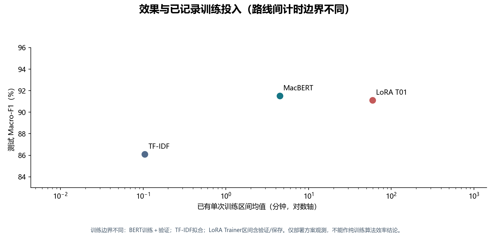
训练边界不同：BERT训练＋验证；TF-IDF拟合；LoRA Trainer区间含验证/保存。仅部署方案观测，不能作纯训练算法效率结论。
数据：training-cost-ledger.json / training-costs.json ｜ PDF
附录

验证776条；本图不是训练loss；无原始逐步loss不补造曲线。
数据：LoRA validation_history.json ｜ PDF
附录
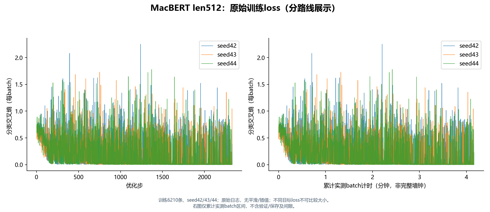
训练6210条、seed42/43/44；原始日志，无平滑/插值；不同目标loss不可比较大小。 右图仅累计实测batch区间，不含验证/保存及间隙。
数据：training-curves.json ｜ PDF
附录
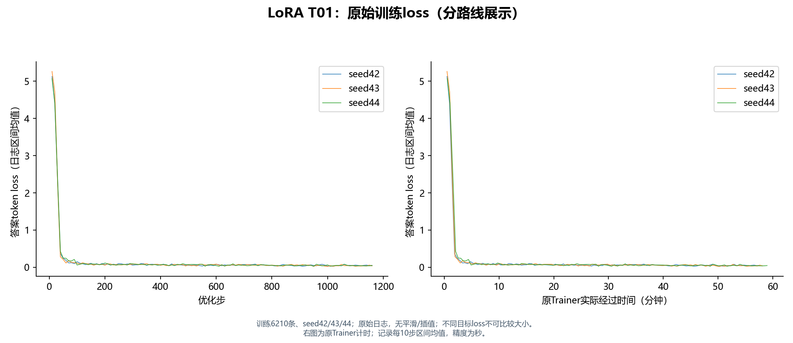
训练6210条、seed42/43/44；原始日志，无平滑/插值；不同目标loss不可比较大小。 右图为原Trainer计时；记录每10步区间均值，精度为秒。
数据：training-curves.json ｜ PDF
正文候选（待学生选用）
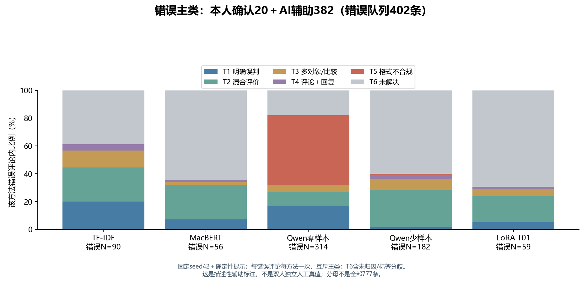
固定seed42＋确定性提示；每错误评论每方法一次，互斥主类；T6含未归因/标签分歧。 这是描述性辅助标注，不是双人独立人工真值；分母不是全部777条。
数据：annotation-statistics.json ｜ PDF
正文候选（待学生选用）
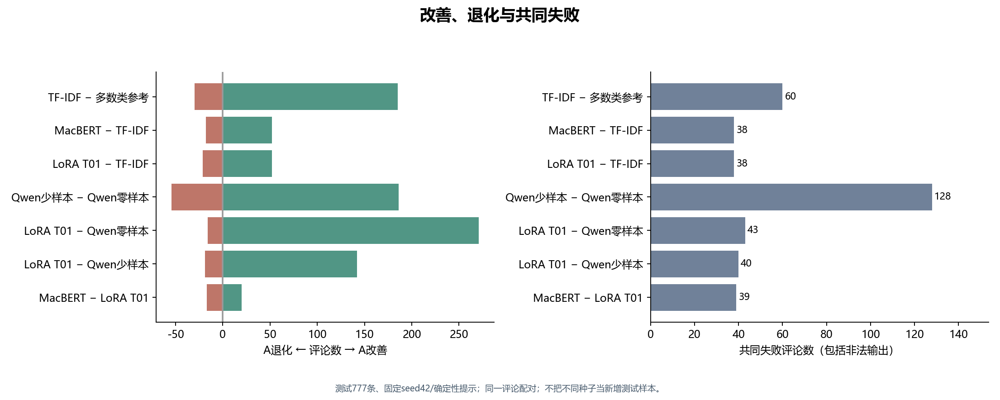
测试777条、固定seed42/确定性提示；同一评论配对；不把不同种子当新增测试样本。
数据：paired-comparisons.json ｜ PDF
正文候选（待学生选用）
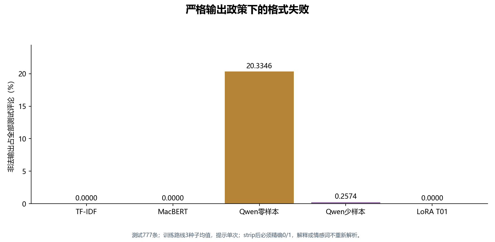
测试777条；训练路线3种子均值，提示单次；strip后必须精确0/1，解释或情感词不重新解析。
数据：methods.json ｜ PDF
附录
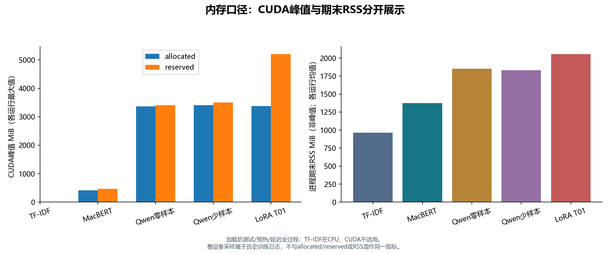
加载后测试/预热/延迟全过程；TF-IDF在CPU、CUDA不适用。 整设备采样属于历史训练日志，不与allocated/reserved或RSS混作同一指标。
数据：latency.json ｜ PDF
附录
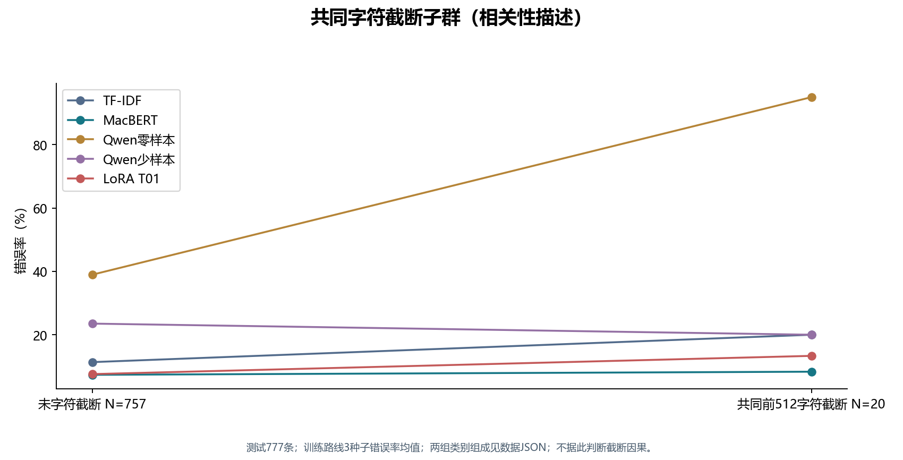
测试777条；训练路线3种子错误率均值；两组类别组成见数据JSON；不据此判断截断因果。
数据：length-and-truncation.json ｜ PDF
附录
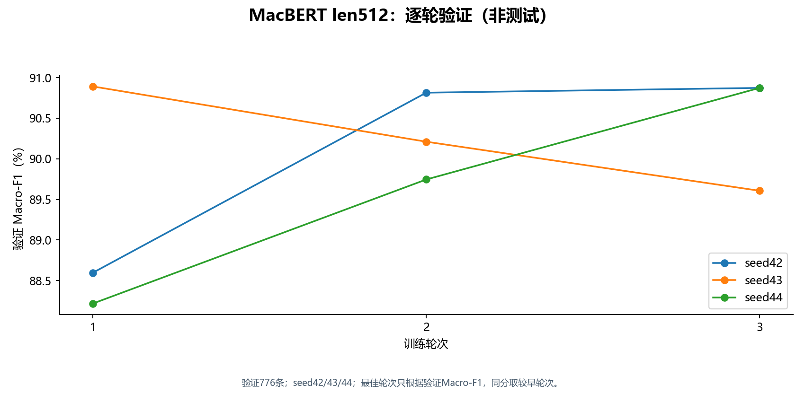
验证776条；seed42/43/44；最佳轮次只根据验证Macro-F1，同分取较早轮次。
数据：bert-epoch-metrics.json ｜ PDF